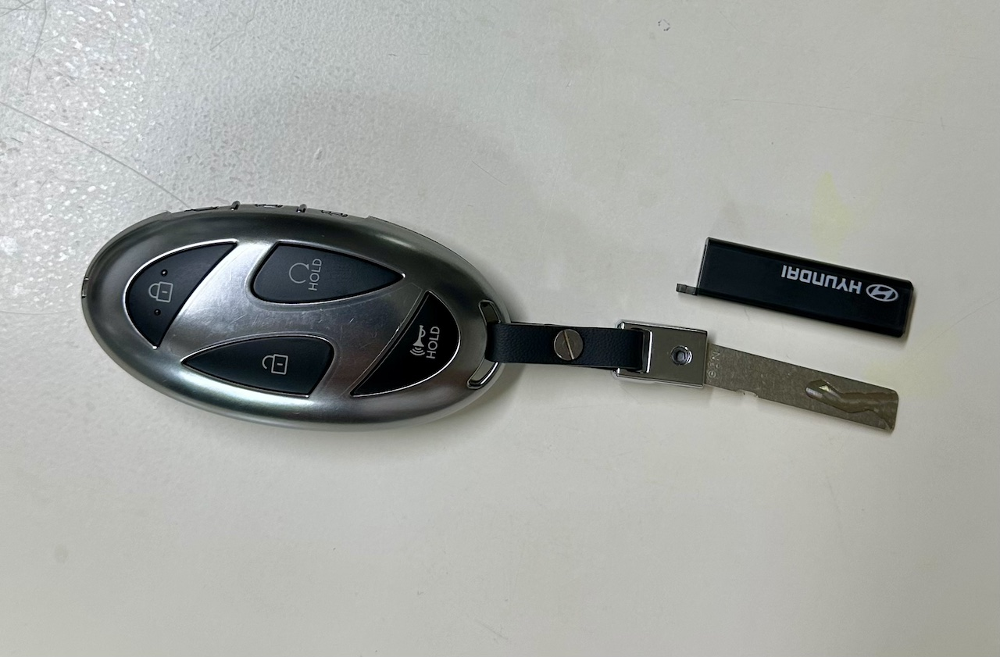

시동 켠 채로 도어를 잠그는 건 가능할까?
가끔이지만 시동을 켠 채로 문을 잠그고 싶을 때가 있다. 특히 여름에 비상등을 켜두고 잠깐 주차해 볼일을 봐야 할 때가 그렇다. 에어컨으로 만들어 놓은 시원함을 유지하고 싶기도 하고 비상등으로 인한 방전 위험도 방지하고 싶으니 말이다.
그렇다면 과연 시동을 켜 놓은 채로 차 문을 잠그고 자리를 비울 방법이 있을까?
이 글은 투싼 하이브리드(NX4 HEV PE) 모델 기준으로 작성 되었지만 딱히 이 모델에만 한정되는 내용은 아닐 것 같다. 그리고 확인되지 않은 내용도 일부 있으니 주의하자.
단순한 실험
얼핏 생각해보면 시동을 켜둔 채로 내린 후 도어 손잡이 터치를 이용해 도어를 잠그거나 스마트키의 잠금 버튼을 누르면 될 것 같지만 그게 안 된다. 해보면 알겠지만 차량 내부에서 작게 "삐-" 소리가 나면서 잠기지 않는다.
왜 이러는지 이유는 모르겠다. 시동을 건 채로도 도어를 잠글 수 있어야 정상일 것 같은데 왜 그럴까? 문을 안 잠궜다가 차를 도난 당하는 뉴스가 종종 보이는 와중이라 더더욱 이해가 안 된다.
어쨌든 이렇게 직관적인 방법으로는 시동을 건 채로 문을 잠글 수 없었다. 그렇다면 다른 방법이 있을까?
방법 1. 창문으로 잠그기
운전석 쪽에는 도어 잠금장치를 한 번에 잠그거나 열 수 있는 버튼이 있다. 만약 밖에서 이 잠금 버튼을 누를 수 있다면 가능하지 않을까?
즉 기어를 P로 놓고 비상등을 켜고 - 운전석 창문을 완전히 내린 다음 밖으로 나온 뒤 - 도어 잠금 버튼을 누르고 - 창문 올리기 버튼을 누른뒤 재빨리 손을 빼는 순으로 진행하면 된다는 의미다.
운전선 쪽 도어의 잠금 및 창문 개폐 버튼
솔직히 좀 귀찮고 사람에 따라 힘들 수도 있어 보인다. 그리고 혹시나 차 키를 안에다 놓고 했다간 낭패를 볼 수도 있다. 그래도 필요하다면 해 볼 수는 있어 보인다.
방법 2. 물리 키로 잠그기
시동이 걸린 채로 나와서 문을 닫고 물리 키로 잠그면 도어가 잠긴다. 스마트키 차량이라도 비상용 물리 키를 사용할 수 있게 되어 있으니 대부분의 차량은 쓸 수 있을 것 같다.
 현대 스마트키에 물리키를 연결한 모습
다만 요즘 차들은 열쇠 구멍이 키 캡에 숨겨져 있는데 상황에 따라 이 키 캡을 여는 과정이 고난이 될 수도 있다. 투싼의 경우도 쉽게 열리지는 않는 것 같다.
애초에 물리키를 같이 가지고 다니는지 부터 물어봐야 할 지도 모르겠다. 그리고 현대 스마트키는 디자인도 별로지만 어쨌든 물리키를 수납할 수 있는 형태로 만들었었으면 조금이라도 나았을 것 같은 느낌이 든다.
방법 3. 블루링크로 잠그기
블루링크에 차 문을 원격으로 잠그는 기능이 있다. 이를 이용하면 밖에서도 잠글 수 있다. 아직 시험은 해보지 않았지만 된다는 의견이 보여서 투싼도 되지 않을까 생각된다. 쓸 기회가 되면 써보고 글을 업데이트 해야겠다.
블루링크 문 잠금 버튼
다만 블루링크는 5년 이후엔 유료로 바뀌는 지라 상황에 따라 못 쓸 수도 있는 방법이다.
어쨌든 가능성은 있다는 데 의의를 둬야 할 것 같다. 앞의 방법들 보단 편할 것 같으니 말이다.
대안: 그냥 포기하자
그냥 시동 끄고 비상등 켜두고 나와서 문을 잠그자. 굳이 공회전으로 기름를 낭비하고 유해물질을 내뿜고 동력계 부품들 수명을 조금이라도 갉아먹을 필요는 없을 것 같다.
비상등은 별도 전력계로 연결된 몇 안 되는 기능 중 하나다. 즉 시동을 꺼도 배터리가 있는 한 비상등은 계속 동작한다. 그래서 비상등을 켜둔 상태에선 방전 걱정이 들 수도 있겠지만 보통 2~3시간 정도는 견딜 것이다. 오히려 너무 짧은 시간에도 방전이 된다면 배터리 교체를 생각해야 할 시기일 수도 있다.
물론 에어컨 냉기는 답이 없다. 그냥 약간 데워지는 정도로 타협하자. 그나마 가장 효율적인 대안인 것 같으니 이 정도는 희생해도 될 것 같다.